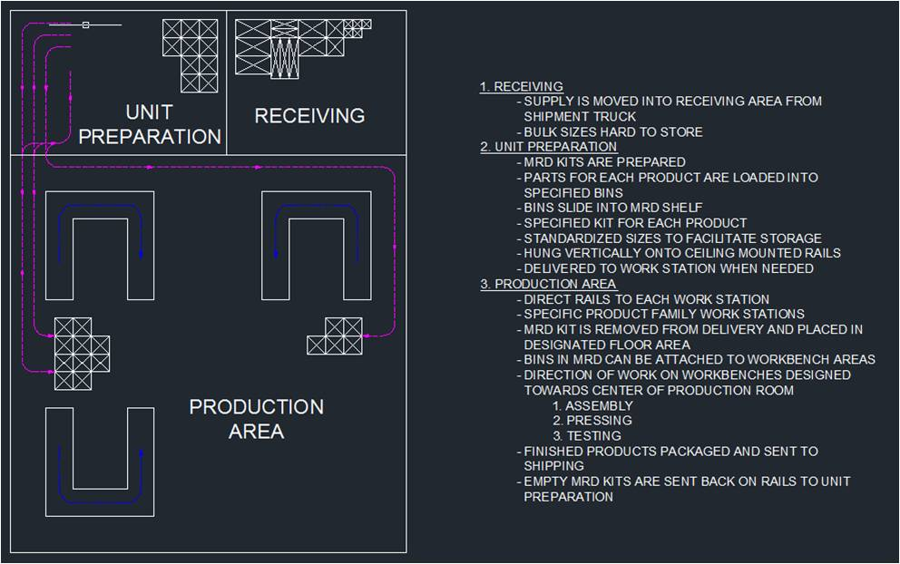
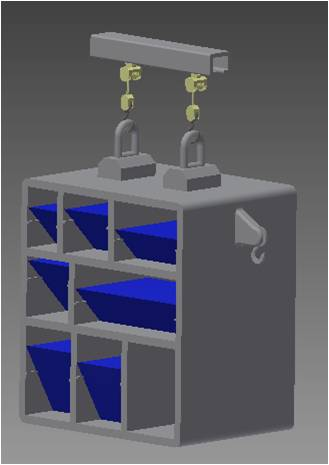
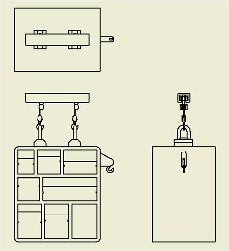
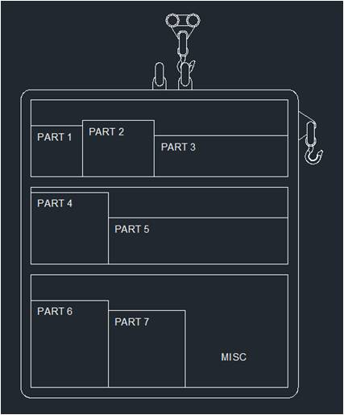
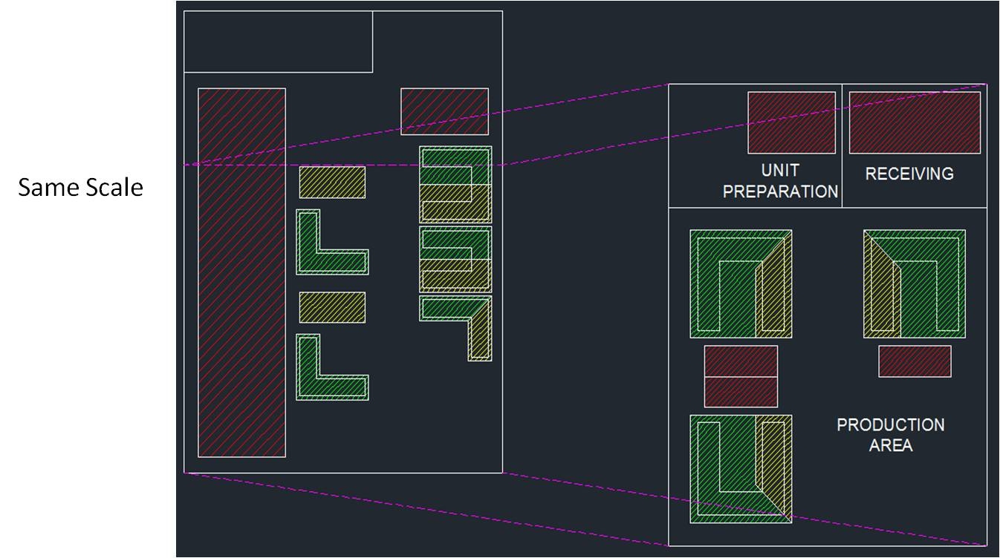

For the mixed model lines, the one of the group’s largest findings was successfully calculating takt times for each of the separate parts and
assembling it all into a easy to read spreadsheet and creating process flow diagrams for it all. Based on those findings and the need to
create a good solution to all the wasted space by parts and workstations, the group came up with a mobile rail delivery system that would
make use of quite a large amount of overhead space to minimize the floor space taken up by all the parts. The incoming parts would be placed
in appropriately sized boxes and placed into a kit that would be hung on the rails and be sent to the individual workstations.
The kit would contain then everything to create a part fully. The workstations were also rearranged to be a little easier to take parts off of the
kits, combine them, and test them on one workstation in a little more logical manner than having to run to different places to get the previously
mentioned things accomplished.
Rail Delivery System/Arrangment of Workbenches

Kitting System



Based on takt time calculations and the current factory layout, it was determined that it would be highly beneficial for OMRON to kit the
product pieces, implement an overhead storage system, and to condense/modify the factory layout. Kitting is going provide a very organized
system where all the parts one needs for a certain product will all be in one storage unit. This allows for easy restocking, where the material
can be directly stored in these storage units instead of being stored in separate boxes on the plant floor. Also the kits can be directly brought
to the workbench through the overhead storage system. This storage system not only is a way to get the material off the plant floor, reducing the
needed space, but it also is a way to easy transfer the material to the workbenches. Once at the workbench, the bins within the storage system can
be easily transferred to the workbench for assembly. To further reduce the footprint of the mixed model line factor area, the workbenches will now
be able to support production of multiple similar product productions. From our findings we would recommend OMRON to take our storage system into
consideration for their low-running mixed model line assembly.
Proposed Reduction of Floor Space
